讲座 4
机器学习
机器学习 provides a computer with data, rather than explicit instructions. Using these data, the computer learns to recognize patterns and becomes able to execute tasks on its own.
Supervised Learning
Supervised learning is a task where a computer learns a function that maps inputs to outputs based on a dataset of input-output pairs.
There are multiple tasks under supervised learning, and one of those is Classification. This is a task where the function maps an input to a discrete output. For 示例, given some information on humidity and air pressure for a particular day (input), the computer decides whether it will rain that day or not (output). The computer does this after training on a dataset with multiple days where humidity and air pressure are already mapped to whether it rained or not.
This task can be formalized as follows. We observe nature, where a function f(humidity, pressure) maps the input to a discrete value, either Rain or No Rain. This function is hidden from us, and it is probably affected by many other variables that we don’t have access to. Our goal is to create function h(humidity, pressure) that can approximate the behavior of function f. Such a task can be visualized by plotting days on the dimensions of humidity and rain (the input), coloring each data point in blue if it rained that day and in red if it didn’t rain that day (the output). The white data point has only the input, and the computer needs to figure out the output.
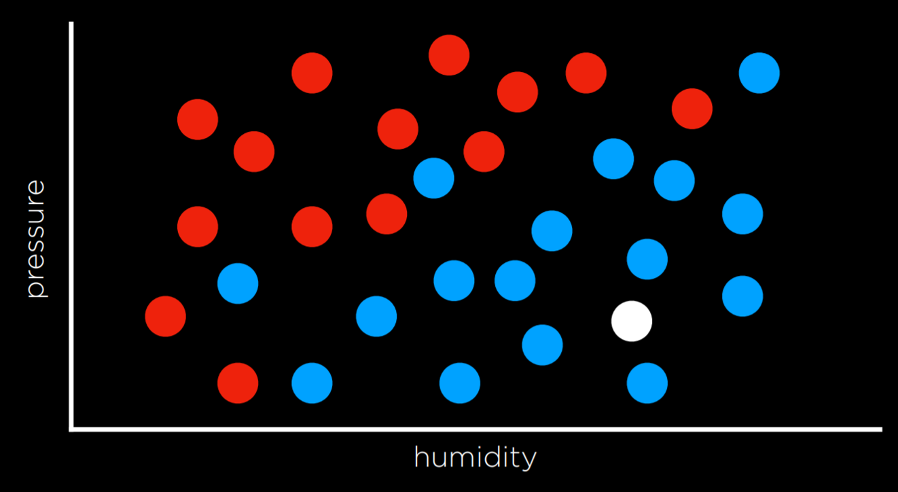
Nearest-Neighbor Classification
One way of solving a task like the one described above is by assigning the variable in 问题 the value of the closest observation. So, for 示例, the white dot on the graph above would be colored blue, because the nearest observed dot is blue as well. This might work well some times, but consider the graph below.
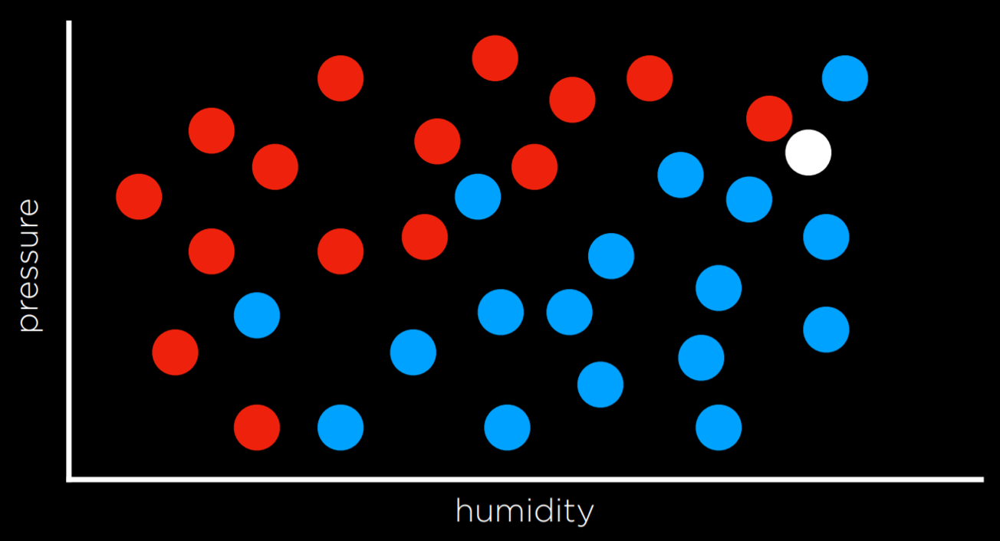
Following the same strategy, the white dot should be colored red, because the nearest observation to it is red as well. However, looking at the bigger picture, it looks like most of the other observations around it are blue, which might give us the intuition that blue is a better prediction in this case, even though the closest observation is red.
One way to get around the limitations of nearest-neighbor classification is by using k-nearest-neighbors classification, where the dot is colored based on the most frequent color of the k nearest neighbors. It is up to the programmer to decide what k is. Using a 3-nearest neighbors classification, for 示例, the white dot above will be colored blue, which intuitively seems like a better decision.
A drawback of the k-nearest-neighbors classification is that, using a naive approach, the algorithm will have to measure the distance of every single point to the point in 问题, which is computationally expensive. This can be sped up by using 数据结构 that enable finding neighbors 更多 quickly or by pruning irrelevant observations.
Perceptron Learning
Another way of going 关于 a classification problem, as opposed to the nearest-neighbor strategy, is looking at the data as a whole and trying to create a decision boundary. In two-dimensional data, we can draw a line between the two types of observations. Every additional data point will be classified based on the side of the line on which it is plotted.
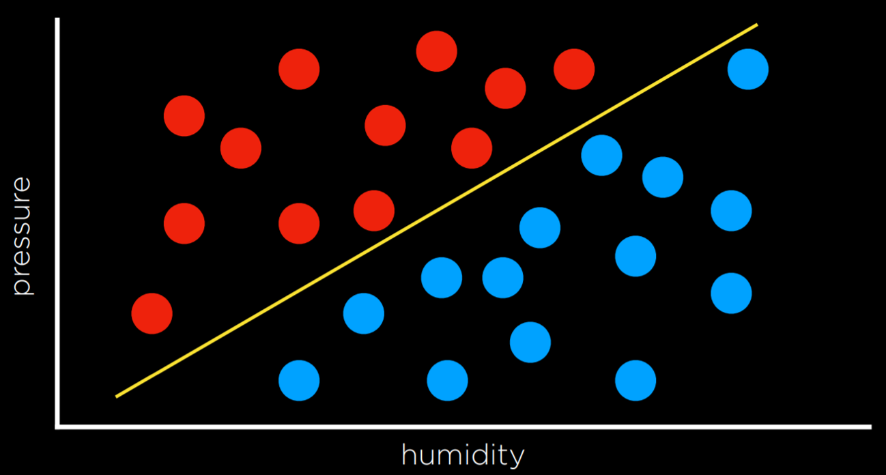
The drawback to this approach is that data are messy, and it is rare that one can draw a line and neatly divide the classes into two observations without any mistakes. Often, we will compromise, drawing a boundary that separates the observations correctly 更多 often than not, but still occasionally misclassifies them.
In this case, the input of
- x₁ = Humidity
- x₂ = Pressure
will be given to a hypothesis function h(x₁, x₂), which will output its prediction of whether it is going to rain that day or not. It will do so by checking on which side of the decision boundary the observation falls. Formally, the function will weight each of the inputs with an addition of a constant, ending in a linear equation of the following form:
- Rain w₀ + w₁x₁ + w₂x₂ ≥ 0
- No Rain otherwise
Often, the output variable will be coded as 1 and 0, where if the equation yields 更多 than 0, the output is 1 (Rain), and 0 otherwise (No Rain).
The weights and values are represented by vectors, which are sequences of numbers (which can be stored in lists or tuples in Python). We produce a Weight Vector w: (w₀, w₁, w₂), and getting to the best weight vector is the goal of the 机器学习 algorithm. We also produce an Input Vector x: (1, x₁, x₂).
We take the dot product of the two vectors. That is, we multiply each value in one vector by the corresponding value in the second vector, arriving at the expression above: w₀ + w₁x₁ + w₂x₂. The first value in the input vector is 1 because, when multiplied by the weight vector w₀, we want to keep it a constant.
Thus, we can represent our hypothesis function the following way:
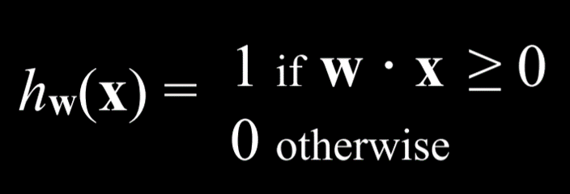
Since the goal of the algorithm is to find the best weight vector, when the algorithm encounters new data it updates the current weights. It does so using the perceptron learning rule:
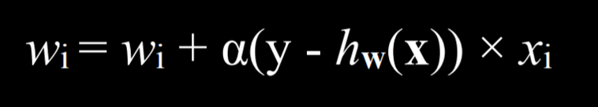
The important takeaway from this rule is that for each data point, we adjust the weights to make our function 更多 accurate. The details, which are not as critical to our point, are that each weight is set to be equal to itself plus some value in parentheses. Here, y stands for the observed value while the hypothesis function stands for the estimate. If they are identical, this whole term is equal to zero, and thus the weight is not changed. If we underestimated (calling No Rain while Rain was observed), then the value in the parentheses will be 1 and the weight will increase by the value of xᵢ scaled by α the learning coefficient. If we overestimated (calling Rain while No Rain was observed), then the value in the parentheses will be -1 and the weight will decrease by the value of x scaled by α. The higher α, the stronger the influence each new event has on the weight.
The result of this process is a threshold function that switches from 0 to 1 once the estimated value crosses some threshold.
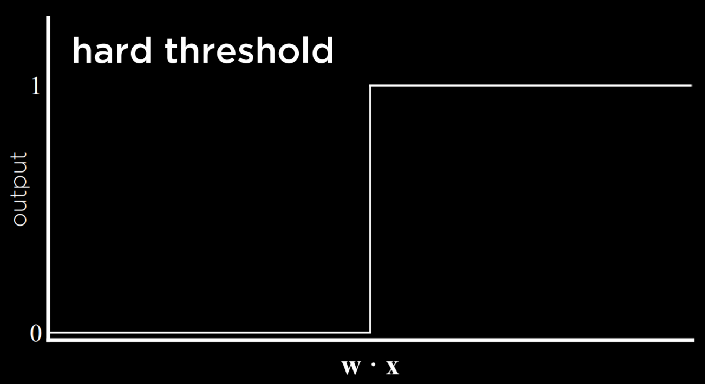
The problem with this type of function is that it is unable to express uncertainty, since it can only be equal to 0 or to 1. It employs a hard threshold. A way to go around this is by using a logistic function, which employs a soft threshold. A logistic function can yield a real number between 0 and 1, which will express confidence in the estimate. The closer the value to 1, the 更多 likely it is to rain.
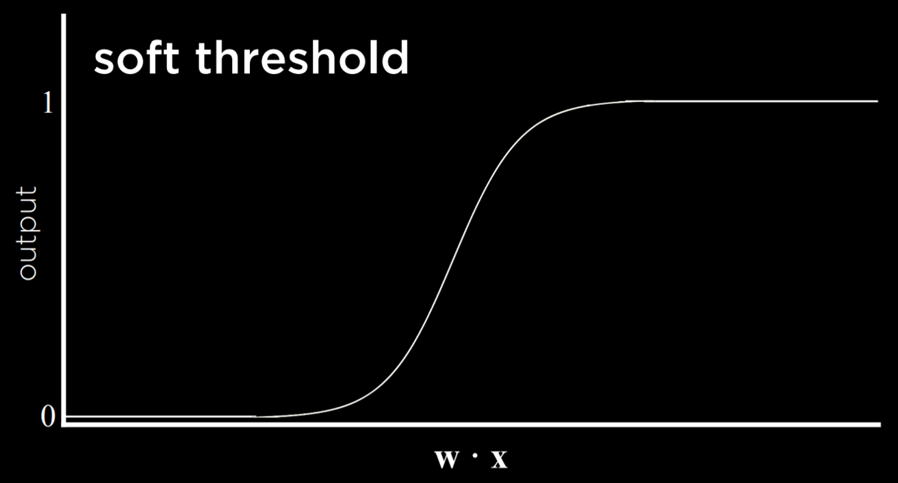
Support Vector Machines
In addition to nearest-neighbor and linear regression, another approach to classification is the Support Vector Machine. This approach uses an additional vector (support vector) near the decision boundary to make the best decision when separating the data. Consider the 示例 below.
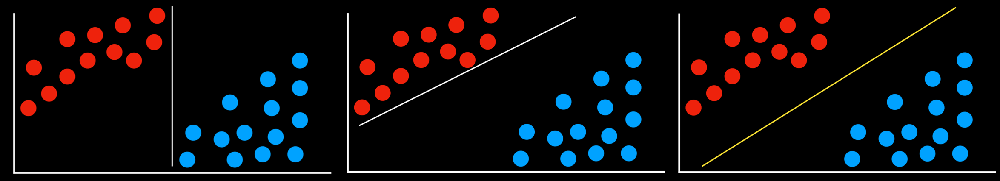
All the decision boundaries work in that they separate the data without any mistakes. However, are they equally as good? The two leftmost decision boundaries are very 关闭 to some of the observations. This means that a new data point that differs only slightly from one group can be wrongly classified as the other. As opposed to that, the rightmost decision boundary keeps the most distance from each of the groups, thus giving the most leeway for variation within it. This type of boundary, which is as far as possible from the two groups it separates, is called the Maximum Margin Separator.
Another benefit of support vector machines is that they can represent decision boundaries with 更多 than two dimensions, as well as non-linear decision boundaries, such as below.
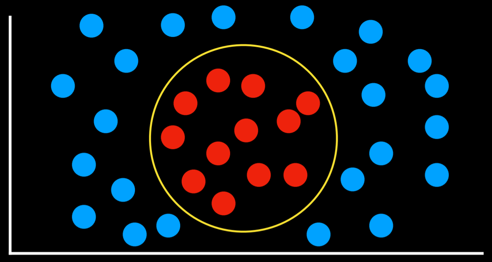
To summarize, there are multiple ways to go 关于 classification problems, with no one being always better than the other. Each has their drawbacks and might prove 更多 useful than others in specific situations.
Regression
Regression is a supervised learning task of a function that maps an input point to a continuous value, some real number. This differs from classification in that classification problems map an input to discrete values (Rain or No Rain).
For 示例, a company might use regression to 答案 the 问题 of how money spent advertising predicts money earned in sales. In this case, an observed function f(advertising) represents the observed income following some money that was spent in advertising (笔记 that the function can take 更多 than one input variable). These are the data that we start with. With this data, we want to come up with a hypothesis function h(advertising) that will try to approximate the behavior of function f. h will generate a line whose goal is not to separate between types of observations, but to predict, based on the input, what will be the value of the output.
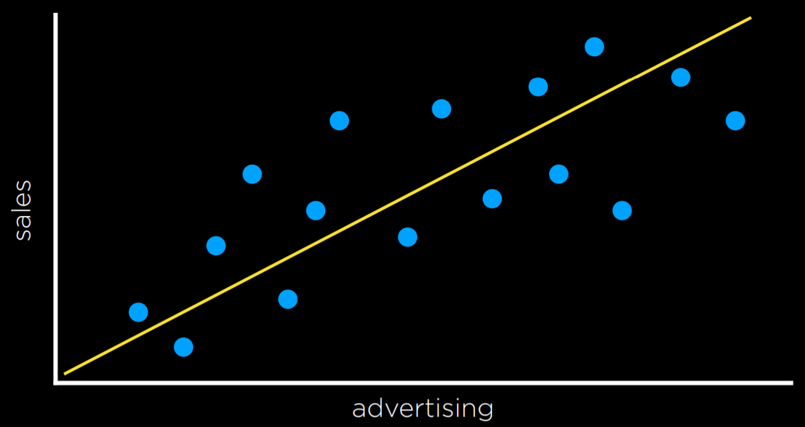
Loss Functions
Loss functions are a way to quantify the utility lost by any of the decision rules above. The 较少 accurate the prediction, the larger the loss.
For classification problems, we can use a 0-1 Loss Function.
-
L(actual, predicted):
- 0 if actual = predicted
- 1 otherwise
In words, this function gains value when the prediction isn’t correct and doesn’t gain value when it is correct (i.e. when the observed and predicted values match).
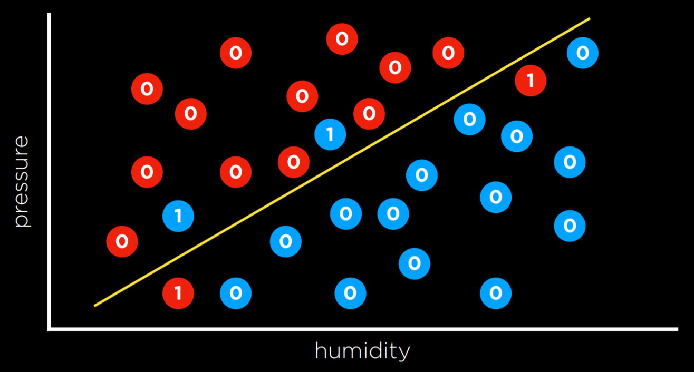
In the 示例 above, the days that are valued at 0 are the ones where we predicted the weather correctly (rainy days are below the line and not rainy days are above the line). However, days when it didn’t rain below the line and days when it did rain above it are the ones that we failed to predict. We give each one the value of 1 and sum them up to get an empirical estimate of how lossy our decision boundary is.
L₁ and L₂ loss functions can be used when predicting a continuous value. In this case, we are interested in quantifying for each prediction how much it differed from the observed value. We do this by taking either the absolute value or the squared value of the observed value minus the predicted value (i.e. how far the prediction was from the observed value).
- L₁: L(actual, predicted) = |actual - predicted|
- L₂: L(actual, predicted) = (actual - predicted)²
One can choose the loss function that serves their goals best. L₂ penalizes outliers 更多 harshly than L₁ because it squares the the difference. L₁ can be visualized by summing the distances from each observed point to the predicted point on the regression line:
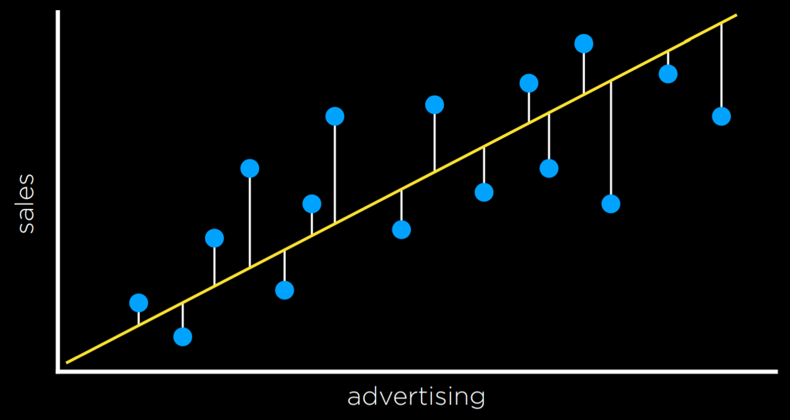
Overfitting
Overfitting is when a model fits the training data so well that it fails to generalize to other data sets. In this sense, loss functions are a double edged sword. In the two 示例 below, the loss function is minimized such that the loss is equal to 0. However, it is unlikely that it will fit new data well.
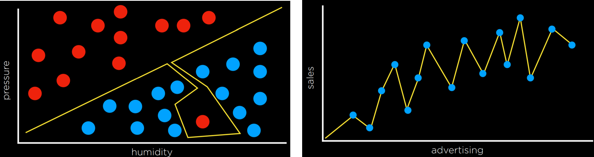
For 示例, in the left graph, a dot 下一页 to the red one at the bottom of the screen is likely to be Rain (blue). However, with the overfitted model, it will be classified as No Rain (red).
Regularization
Regularization is the process of penalizing hypotheses that are 更多 complex to favor simpler, 更多 general hypotheses. We use regularization to avoid overfitting.
In regularization, we estimate the cost of the hypothesis function h by adding up its loss and a measure of its complexity.
cost(h) = loss(h) + λcomplexity(h)
Lambda (λ) is a constant that we can use to modulate how strongly to penalize for complexity in our cost function. The higher λ is, the 更多 costly complexity is.
One way to test whether we overfitted the model is with Holdout Cross Validation. In this technique, we split all the data in two: a training set and a test set. We run the learning algorithm on the training set, and then see how well it predicts the data in the test set. The idea here is that by 测试 on data that were not used in training, we can a measure how well the learning generalizes.
The downside of holdout cross validation is that we don’t get to train the model on half the data, since it is used for evaluation purposes. A way to deal with this is using k-Fold Cross-Validation. In this process, we divide the data into k sets. We run the training k times, each 时间 leaving out one dataset and using it as a test set. We end up with k different evaluations of our model, which we can average and get an estimate of how our model generalizes without losing any data.
scikit-learn
As often is the case with Python, there are multiple libraries that allow us to conveniently use 机器学习 算法. One of such libraries is scikit-learn.
As an 示例, we are going to use a CSV dataset of counterfeit banknotes.
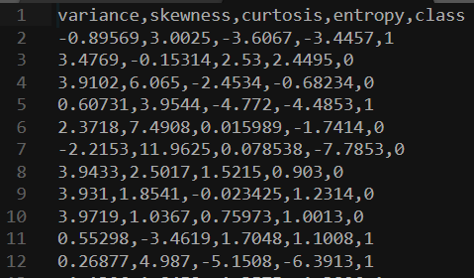
The four left columns are data that we can use to predict whether a 笔记 is genuine or counterfeit, which is external data provided by a human, coded as 0 and 1. Now we can train our model on this data set and see if we can predict whether new banknotes are genuine or not.
import csv
import random
from sklearn import svm
from sklearn.linear_model import Perceptron
from sklearn.naive_bayes import GaussianNB
from sklearn.neighbors import KNeighborsClassifier
# model = KNeighborsClassifier(n_neighbors=1)
# model = svm.SVC()
model = Perceptron()
笔记 that after importing the libraries, we can choose which model to use. The rest of the code will stay the same. SVC stands for Support Vector Classifier (which we know as support vector machine). The KNeighborsClassifier uses the k-neighbors strategy, and requires as input the number of neighbors it should consider.
# Read data in from file
with open("banknotes.csv") as f:
reader = csv.reader(f)
next(reader)
data = []
for row in reader:
data.append({
"evidence": [float(cell) for cell in row[:4]],
"label": "Authentic" if row[4] == "0" else "Counterfeit"
})
# Separate data into training and testing groups
holdout = int(0.40 * len(data))
random.shuffle(data)
testing = data[:holdout]
training = data[holdout:]
# Train model on training set
X_training = [row["evidence"] for row in training]
y_training = [row["label"] for row in training]
model.fit(X_training, y_training)
# Make predictions on the testing set
X_testing = [row["evidence"] for row in testing]
y_testing = [row["label"] for row in testing]
predictions = model.predict(X_testing)
# Compute how well we performed
correct = 0
incorrect = 0
total = 0
for actual, predicted in zip(y_testing, predictions):
total += 1
if actual == predicted:
correct += 1
else:
incorrect += 1
# Print results
print(f"Results for model {type(model).__name__}")
print(f"Correct: {correct}")
print(f"Incorrect: {incorrect}")
print(f"Accuracy: {100 * correct / total:.2f}%")
This manual version of running the algorithm can be found in the 源代码 for this 讲座 under banknotes0.py. Since the algorithm is used often in a similar way, scikit-learn contains additional functions that make the code even 更多 succinct and easy to use, and this version can be found under banknotes1.py.
Reinforcement Learning
Reinforcement learning is another approach to 机器学习, where after each action, the agent gets feedback in the form of reward or punishment (a positive or a negative numerical value).
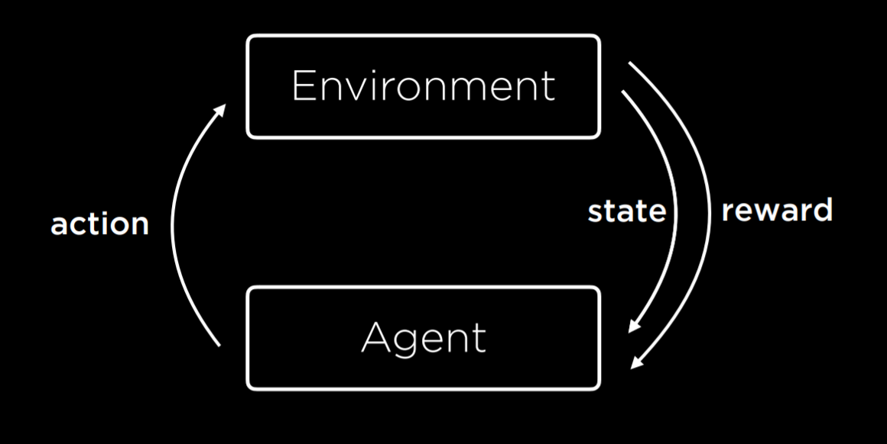
The learning process starts by the environment providing a state to the agent. Then, the agent performs an action on the state. Based on this action, the environment will return a state and a reward to the agent, where the reward can be positive, making the behavior 更多 likely in the future, or negative (i.e. punishment), making the behavior 较少 likely in the future.
This type of algorithm can be used to train walking robots, for 示例, where each step returns a positive number (reward) and each 秋季 a negative number (punishment).
Markov Decision Processes
Reinforcement learning can be viewed as a Markov decision process, having the following properties:
- Set of states S
- Set of actions Actions(S)
- Transition model P(s’ | s, a)
- Reward function R(s, a, s’)
For 示例, consider the following task:
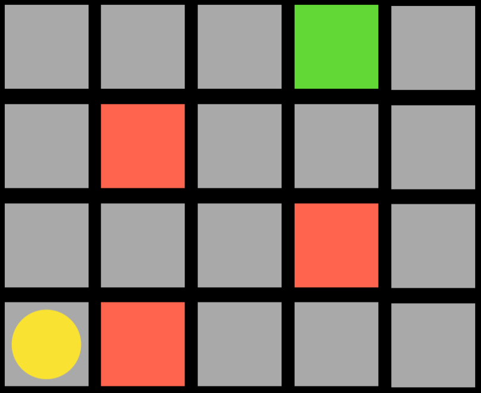
The agent is the yellow circle, and it needs to get to the green square while avoiding the red squares. Every single square in the task is a state. Moving up, down, or to the sides is an action. The transition model gives us the new state after performing an action, and the reward function is what kind of feedback the agent gets. For 示例, if the agent chooses to go right, it will step on a red square and get negative feedback. This means that the agent will learn that, when in the state of being in the bottom-left square, it should avoid going right. This way, the agent will start exploring the space, learning which state-action pairs it should avoid. The algorithm can be probabilistic, choosing to take different actions in different states based on some probability that’s being increased or decreased based on reward. When the agent reaches the green square, it will get a positive reward, learning that it is favorable to take the action it took in the 上一页 state.
Q-Learning
Q-Learning is one model of reinforcement learning, where a function Q(s, a) outputs an estimate of the value of taking action a in state s.
The model starts with all estimated values equal to 0 (Q(s,a) = 0 for all s, a). When an action is taken and a reward is received, the function does two things: 1) it estimates the value of Q(s, a) based on current reward and expected future rewards, and 2) updates Q(s, a) to take into account both the old estimate and the new estimate. This gives us an algorithm that is capable of improving upon its past knowledge without starting from scratch.
Q(s, a) ⟵ Q(s, a) + α(new value estimate - Q(s, a))
The updated value of Q(s, a) is equal to the 上一页 value of Q(s, a) in addition to some updating value. This value is determined as the difference between the new value and the old value, multiplied by α, a learning coefficient. When α = 1 the new estimate simply overwrites the old one. When α = 0, the estimated value is never updated. By raising and lowering α, we can determine how fast 上一页 knowledge is being updated by new estimates.
The new value estimate can be expressed as a sum of the reward (r) and the future reward estimate. To get the future reward estimate, we consider the new state that we got after taking the last action, and add the estimate of the action in this new state that will bring to the highest reward. This way, we estimate the utility of making action a in state s not only by the reward it received, but also by the expected utility of the 下一页 step. The value of the future reward estimate can sometimes appear with a coefficient gamma that controls how much future rewards are valued. We end up with the following equation:
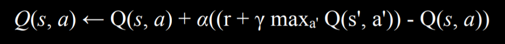
A Greedy Decision-Making algorithm completely discounts the future estimated rewards, instead always choosing the action a in current state s that has the highest Q(s, a).
This brings us to discuss the Explore vs. Exploit tradeoff. A greedy algorithm always exploits, taking the actions that are already established to bring to good outcomes. However, it will always follow the same path to the solution, never finding a better path. Exploration, on the other hand, means that the algorithm 五月 use a previously unexplored route on its way to the target, allowing it to discover 更多 efficient solutions along the way. For 示例, if you listen to the same 歌曲 every single 时间, you know you will enjoy them, but you will never get to know new 歌曲 that you might like even 更多!
To implement the concept of exploration and exploitation, we can use the ε (epsilon) greedy algorithm. In this type of algorithm, we set ε equal to how often we want to move randomly. With probability 1-ε, the algorithm chooses the best move (exploitation). With probability ε, the algorithm chooses a random move (exploration).
Another way to train a reinforcement learning model is to give feedback not upon every move, but upon the end of the whole process. For 示例, consider a game of Nim. In this game, different numbers of objects are distributed between piles. Each player takes any number of objects from any one single pile, and the player who takes the last object looses. In such a game, an untrained AI will play randomly, and it will be easy to win against it. To train the AI, it will start from playing a game randomly, and in the end get a reward of 1 for winning and -1 for losing. When it is trained on 10,000 games, for 示例, it is already smart enough to be hard to win against it.
This approach becomes 更多 computationally demanding when a game has multiple states and possible actions, such as chess. It is infeasible to generate an estimated value for every possible move in every possible state. In this case, we can use a function approximation, which allows us to approximate Q(s, a) using various other features, rather than storing one value for each state-action pair. Thus, the algorithm becomes able to recognize which moves are similar enough so that their estimated value should be similar as well, and use this heuristic in its decision making.
Unsupervised Learning
In all the cases we saw before, as in supervised learning, we had data with labels that the algorithm could learn from. For 示例, when we trained an algorithm to recognize counterfeit 笔记, each banknote had four variables with different values (the input data) and whether it is counterfeit or not (the label). In unsupervised learning, only the input data is present and the AI learns patterns in these data.
Clustering
Clustering is an unsupervised learning task that takes the input data and organizes it into groups such that similar objects end up in the same group. This can be used, for 示例, in genetics research, when trying to find similar genes, or in image segmentation, when defining different parts of the image based on similarity between pixels.
k-means Clustering
k-means Clustering is an algorithm to perform a clustering task. It maps all data points in a space, and then randomly places k cluster centers in the space (it is up to the programmer to decide how many; this is the starting state we see on the left). Each cluster center is simply a point in the space. Then, each cluster gets assigned all the points that are closest to its center than to any other center (this is the middle picture). Then, in an iterative process, the cluster center moves to the middle of all these points (the state on the right), and then points are reassigned again to the clusters whose centers are now closest to them. When, after repeating the process, each point remains in the same cluster it was before, we have reached an equilibrium and the algorithm is over, leaving us with points divided between clusters.
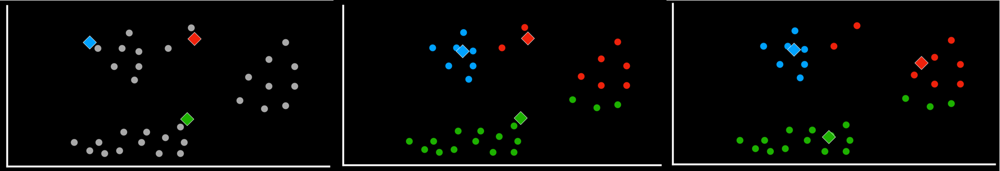